01:00:30 · 3630.000s
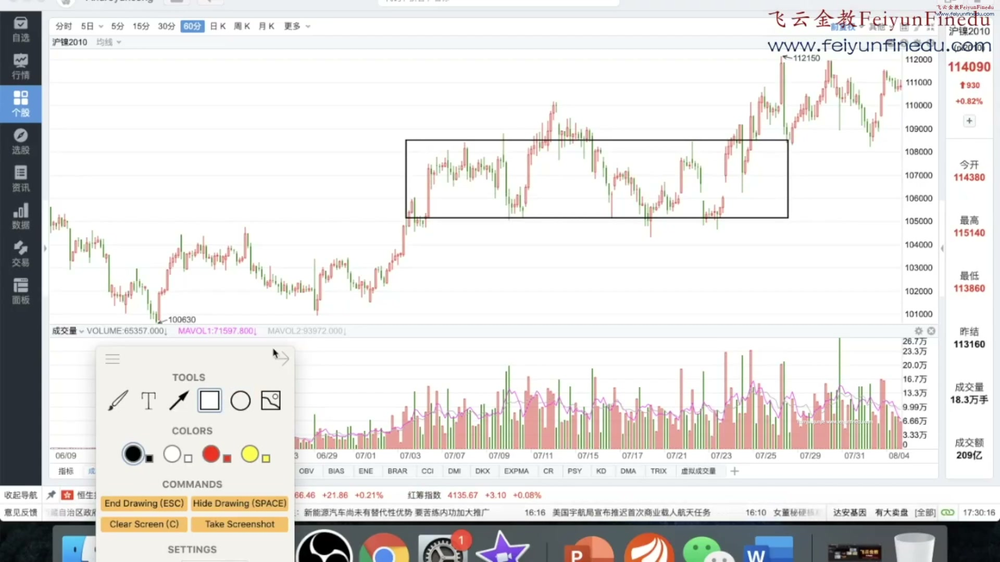
但是他有一个非常明显的弹簧 你看收了一个巨 收了一个大的一个十字形啊 而且是特别大的十字形 这个收完还并不表示他会反弹 但是一旦他的这儿有一个阳线 那么就表示会反弹了啊 好这也是一个相提弹簧 好股票们看完了 我们看看其他的像期货啊 还有股指啊 里面有没有相提弹簧 好大家看这个期货品种 这个地方就有一个小弹簧 当然它不是特别的明显 你看如果把它看成箱体 它这个地方是不是一个小弹簧 快速的往下打 打了之后又快速拉起来 后来又来了一次快速往下打 打了之后又快速拉起来 但是这一根K线 其实我是一般的不会做的 我要等到这一根来 这一根来才表示它明确了 是不是 它这个箱体弹簧还可以配合我们的 你看配合我们的双突破 是不是 在更小周期内 那么你就更保险了
01:01:15 · 3675.000s

它这个箱体弹簧还可以配合我们的 你看配合我们的双突破 是不是 在更小周期内 那么你就更保险了 好 这是我们的相体弹簧 我们最后再来看 第十二 形态突破 形态突破这个就基本上就不用多说了 大家都知道啊 就是有些时候它是一个相体 有些时候它是一个三角形 有些时候它是个菱形 只要是它突破它就可以做 当然这个时候我们就做一个多周期共振 这多周期共振呢 就是说这个时候的是什么60分钟 5分钟30分钟一小时 全是多 我看多 这个时候多周期共振 往往就会有一个加速 这个我们就随随便便找一个 随随便便找一个 你看我们就太多太多了 这种你看这个地方 是不是一个形态 形态突破 但是它是不是多周期公正呢 你看整个趋势是不是向上的
01:01:30 · 3690.000s
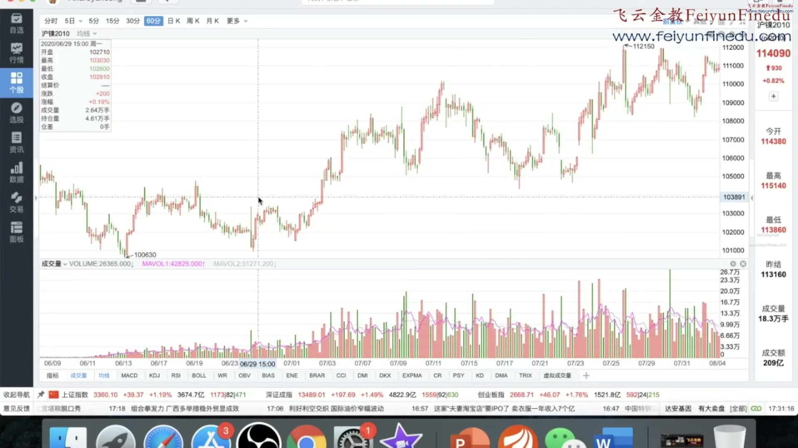
形态突破这个就基本上就不用多说了 大家都知道啊 就是有些时候它是一个相体 有些时候它是一个三角形 有些时候它是个菱形 只要是它突破它就可以做 当然这个时候我们就做一个多周期共振 这多周期共振呢 就是说这个时候的是什么60分钟 5分钟30分钟一小时 全是多 我看多 这个时候多周期共振 往往就会有一个加速 这个我们就随随便便找一个 随随便便找一个 你看我们就太多太多了 这种你看这个地方 是不是一个形态 形态突破 但是它是不是多周期公正呢 你看整个趋势是不是向上的 整个趋势还行 所以它后面就有一波上升 那这个地方是不是多周期公正呢 就不是了嘛 你看为什么 它的这个整个的趋势下降的 是不是 它只有整个趋势上升的 就会形成多周期共振
01:01:45 · 3705.000s
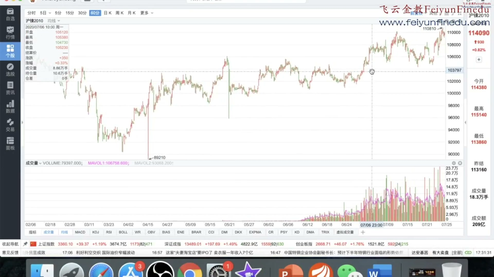
5分钟30分钟一小时 全是多 我看多 这个时候多周期共振 往往就会有一个加速 这个我们就随随便便找一个 随随便便找一个 你看我们就太多太多了 这种你看这个地方 是不是一个形态 形态突破 但是它是不是多周期公正呢 你看整个趋势是不是向上的 整个趋势还行 所以它后面就有一波上升 那这个地方是不是多周期公正呢 就不是了嘛 你看为什么 它的这个整个的趋势下降的 是不是 它只有整个趋势上升的 就会形成多周期共振 那比如这个地方 就会形成多周期共振 为什么 它一直在涨 那么你看这种60分钟 5分钟 还有像1分钟 它就可以全部形成一个多周期共振 就是所有的都是向上的
01:02:15 · 3735.000s
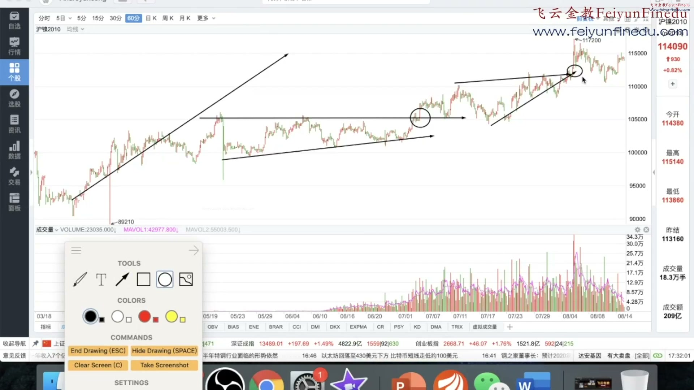
它的这个整个的趋势下降的 是不是 它只有整个趋势上升的 就会形成多周期共振 那比如这个地方 就会形成多周期共振 为什么 它一直在涨 那么你看这种60分钟 5分钟 还有像1分钟 它就可以全部形成一个多周期共振 就是所有的都是向上的 如果你看均线 它们所有的均线都是多头排列 都是多头排列 那这种情况下 它就叫多周期共振 这个很简单 这个大家应该没有什么可多说的 好我们来说一个最后一个 这个比较特殊 这个就是一轮趋势突然急跌到50% 这是本来也不大的趋势 不知道出什么问题 突然跌到50% 它只是第一次 而且是必须是急跌 因为它有可能会有市场反应
01:02:30 · 3750.000s
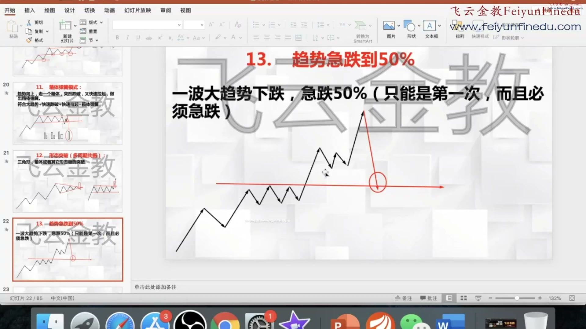
还有像1分钟 它就可以全部形成一个多周期共振 就是所有的都是向上的 如果你看均线 它们所有的均线都是多头排列 都是多头排列 那这种情况下 它就叫多周期共振 这个很简单 这个大家应该没有什么可多说的 好我们来说一个最后一个 这个比较特殊 这个就是一轮趋势突然急跌到50% 这是本来也不大的趋势 不知道出什么问题 突然跌到50% 它只是第一次 而且是必须是急跌 因为它有可能会有市场反应 市场情绪各方面 而且是必须急跌 急跌的话它就可能大的反弹 这个就是一般的很罕见 但是我给大家举个例子 大家马上就明白了 比如说最近的美国的这个股指 就是这样子的呀
01:02:45 · 3765.000s
这个很简单 这个大家应该没有什么可多说的 好我们来说一个最后一个 这个比较特殊 这个就是一轮趋势突然急跌到50% 这是本来也不大的趋势 不知道出什么问题 突然跌到50% 它只是第一次 而且是必须是急跌 因为它有可能会有市场反应 市场情绪各方面 而且是必须急跌 急跌的话它就可能大的反弹 这个就是一般的很罕见 但是我给大家举个例子 大家马上就明白了 比如说最近的美国的这个股指 就是这样子的呀 这个道琼斯的股指 我们看如果你去看周线 大家看这个周线 其实看月线更明显 看月线更明显 大家看整个的美国是不是一直都是上升的呀 再回调再一直上升
01:03:15 · 3795.000s
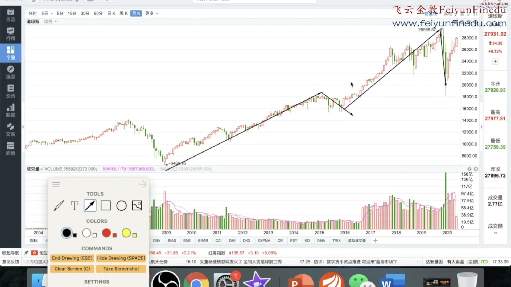
比如说最近的美国的这个股指 就是这样子的呀 这个道琼斯的股指 我们看如果你去看周线 大家看这个周线 其实看月线更明显 看月线更明显 大家看整个的美国是不是一直都是上升的呀 再回调再一直上升 突然第一轮暴跌 而且直接就跌下去 跌到前面的二分之一线左右 那么它就会有一个剧烈的反弹 大家明白了吗 就是刚才我画的 它本来趋势一直上升一直上升 那它突然就直直这样跌跌跌跌跌跌 跌到这儿一般的会有个反弹 而与之相反 它如果是这样跌的 跌跌撞撞跌跌撞撞像下楼梯一样 它不但不会有反弹 有可能还有加速 明白了吗 所以说只有这种 就是没有任何阻挡的暴跌 它往往会有第一个反弹
01:03:30 · 3810.000s

大家看整个的美国是不是一直都是上升的呀 再回调再一直上升 突然第一轮暴跌 而且直接就跌下去 跌到前面的二分之一线左右 那么它就会有一个剧烈的反弹 大家明白了吗 就是刚才我画的 它本来趋势一直上升一直上升 那它突然就直直这样跌跌跌跌跌跌 跌到这儿一般的会有个反弹 而与之相反 它如果是这样跌的 跌跌撞撞跌跌撞撞像下楼梯一样 它不但不会有反弹 有可能还有加速 明白了吗 所以说只有这种 就是没有任何阻挡的暴跌 它往往会有第一个反弹 好这是我们的这个道琼的这个月线 我们再来看看其他的一些情况 这种情况因为比较少 我们只能将来再举例子 我们举个这比如这个例子吧 这个例子 它是这样子 你看上去一直是上涨 上涨上涨 突然上涨 然后第一轮直接性的暴跌
01:03:45 · 3825.000s
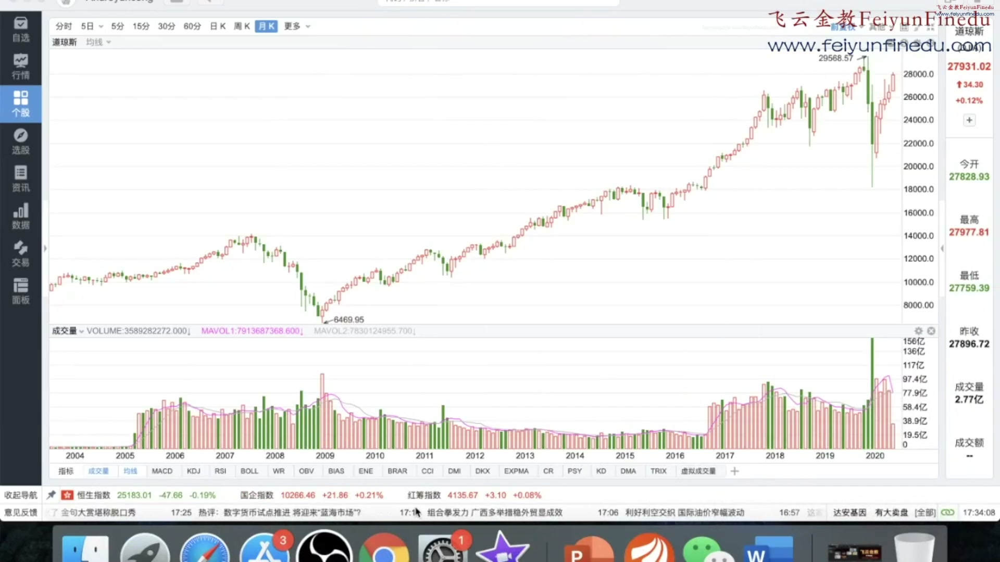
就是刚才我画的 它本来趋势一直上升一直上升 那它突然就直直这样跌跌跌跌跌跌 跌到这儿一般的会有个反弹 而与之相反 它如果是这样跌的 跌跌撞撞跌跌撞撞像下楼梯一样 它不但不会有反弹 有可能还有加速 明白了吗 所以说只有这种 就是没有任何阻挡的暴跌 它往往会有第一个反弹 好这是我们的这个道琼的这个月线 我们再来看看其他的一些情况 这种情况因为比较少 我们只能将来再举例子 我们举个这比如这个例子吧 这个例子 它是这样子 你看上去一直是上涨 上涨上涨 突然上涨 然后第一轮直接性的暴跌 跌到这一段的二分之一 那你看它是不是 刚跌完在这就反弹了 一直反弹到现在 是不是 如果它不是这样子暴跌 它是这样子慢慢跌 慢慢跌 慢慢跌 那你还要小心 但是它是直接性的暴跌
01:04:15 · 3855.000s
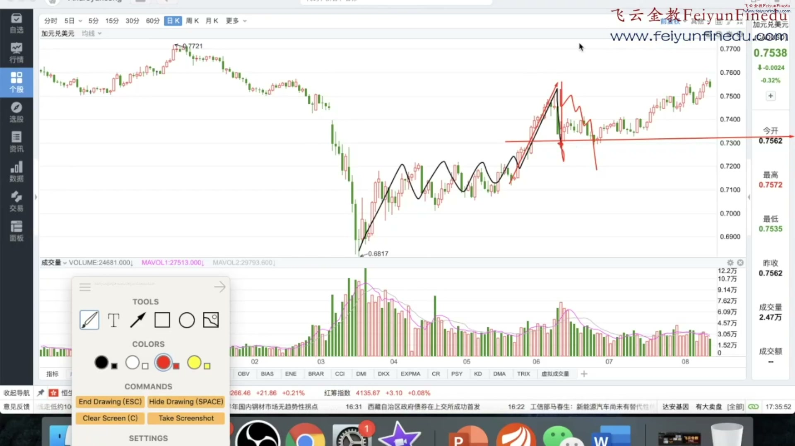
这个例子 它是这样子 你看上去一直是上涨 上涨上涨 突然上涨 然后第一轮直接性的暴跌 跌到这一段的二分之一 那你看它是不是 刚跌完在这就反弹了 一直反弹到现在 是不是 如果它不是这样子暴跌 它是这样子慢慢跌 慢慢跌 慢慢跌 那你还要小心 但是它是直接性的暴跌 跌到这 那么你还可以抢一个小反弹 因为你还是一个顺大 逆小的抢个小反弹 这种的日内交易 你们比较多 现在我也不去跟他找了 因为大家都懂我这个意思就行了 我们把个图再拿出来看一下 他这些都是一些交易小技巧 比较少的情况 而且只是第一次 请大家注意 请大家一定要注意这种前提条件 他如果是这样子回来 又跌回来了就不能再买了 这第二次就已经绝对不能买了 就是第一次 就是第一次的反弹 还可以做一组 第二次就不可以了
01:04:45 · 3885.000s
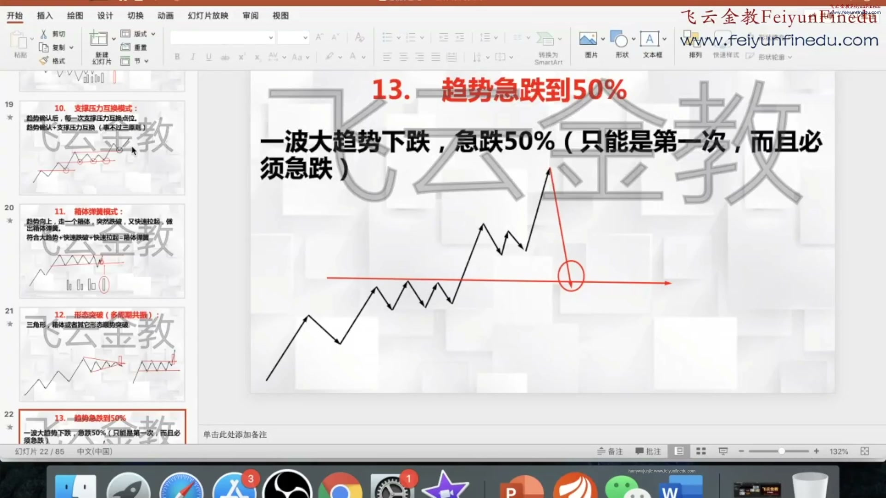
现在我也不去跟他找了 因为大家都懂我这个意思就行了 我们把个图再拿出来看一下 他这些都是一些交易小技巧 比较少的情况 而且只是第一次 请大家注意 请大家一定要注意这种前提条件 他如果是这样子回来 又跌回来了就不能再买了 这第二次就已经绝对不能买了 就是第一次 就是第一次的反弹 还可以做一组 第二次就不可以了 好我们最后再来大家看一下 我们今天讲的几个 这是压力互换买入点 然后相提抬黄 形态突破 多多去公正 最后一个趋势几跌 大家看出来没有 我们实际上就把整个的 从一轮暴跌 它先暴跌 先出来个抛售高潮 可以买入 有2B就买2B没有2B 如果我们有假悠空也可以买 如果2B假悠空都没有 那我们就等顺势投间 如果也没有我们就等双突破 双突破也没有你又去找强势出现
01:05:30 · 3930.000s
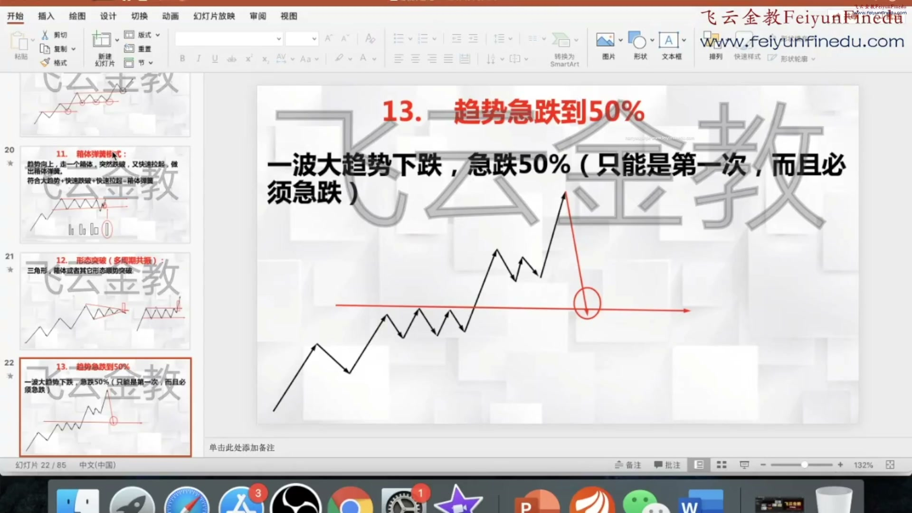
如果2B假悠空都没有 那我们就等顺势投间 如果也没有我们就等双突破 双突破也没有你又去找强势出现 或者你错过了 强势出现跳跃小息回抽N字突破 支撑压力互换 箱底弹簧多周期共振几点 这就等于把你整个的这一波行情 从底部到顶部 每一个阶段的买点 都给大家完美的说出来了 你只要在这些点买 那么你的概率就大一些 而且再配合顺大逆小 现在的绿网已经顺利买到了 而且与此相反的是 如果你要做空 也是有这13个卖空点 只不过呢 他们就是和做多相对 它有一些不同的特点 但是基本上有 就是你把图形反过来看 就是一样的 好这个我们过几期再讲 好我们本周基本上 我们这13个买点 和我们的交易系统就讲完了 希望大家喜欢
01:06:10 · 3970.000s
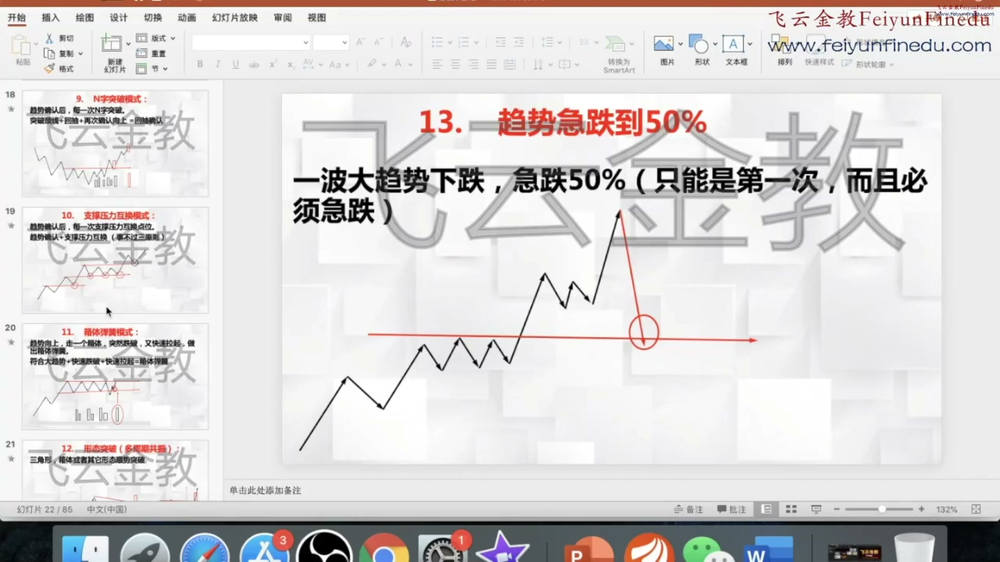
就是你把图形反过来看 就是一样的 好这个我们过几期再讲 好我们本周基本上 我们这13个买点 和我们的交易系统就讲完了 希望大家喜欢 也希望大家多学习 多去把基础知识打牢 只要你能够做到顺大利小 只要你能够做到止损 只要你能够有耐心 等待这13个点出来 我们敢确认 你就一定能够慢慢的走向稳定盈利之路 好的非常感谢 我们下期再见